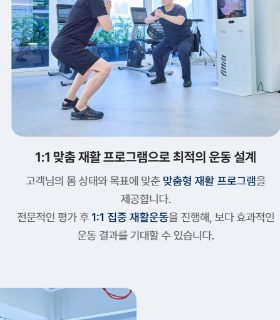

👤 자기소개 (About Me)
사유하는 사색가, 시스템을 짓는 비즈니스 아키텍트, 문제를 치료(물리)하는 빌더 김호선입니다.

김호선 (Ho-seon Kim)
글로벌 헬스케어 전략가 & 사유하는 창작자
신체의 기능과 통증을 진단하던 물리치료사로서, 국내의 방문재활 공백을 메우기 위해 연세방문재활운동센터 부대표로 합류하여 법인화와 대기업·지자체 MOU, 운영 시스템을 설계했습니다. 동시에 러시아와 캐나다 등 북방의 고요 속에서 책을 읽고 사유하며 소설을 쓰는 창작자입니다.
이제는 경영과 임상 현장에서 다져진 '결핍을 잇는 통찰'을 공공 빅데이터와 무인 자동화 코딩으로 확장하여, 세상의 비효율을 직접 '치료(물리)'하는 디지털 빌더로 나아가고 있습니다.
🏥 01. 방문재활 공백을 채운 비즈니스 아키텍트
거동이 불편해 병원을 찾지 못하는 환자들의 거대한 '방문재활 수요 공백'을 포착하고, 대표와 함께 연세방문재활운동센터의 초기 법인화와 대외 확장을 총괄했습니다. 임상 현장에서 멈췄던 환자의 걸음을 직접 회복시키며 서비스 전달 프로토콜을 정립했고, 대기업 및 지자체와의 공식 협약을 전담 성사시켰습니다.

🌐 02. 러시아와 캐나다를 내다본 글로벌 헬스케어 전략
국내에 안주하지 않고, 지리적·환경적 결핍이 뚜렷한 북방 국가들의 보건의료 시장을 분석하여 양방향 상생을 꾀하는 글로벌 사업 모델을 기획했습니다.
🇷🇺 러시아: 중소병원 의료관광 브릿지
국내 중소병원의 종합검진 및 헬스케어센터를 기반으로, 현지 대학병원 및 호텔과 협력해 1차 의료 서비스를 체험하게 한 뒤 한국 본원으로 정밀 검진과 치료를 유도하는 해외 의료관광 인바운드 모델을 수립했습니다.
🇨🇦 캐나다: 재활 의료공백 & 산학 파이프라인
캐나다의 만성적인 재활 의료공백 수요를 파악하고, 국내 물리치료과 인재들을 연계하여 현지 재활운동 서비스를 구축한 뒤 워킹홀리데이(Working Holiday) 비자 발급까지 지원하는 산·학 연계 진출 모델을 설계했습니다.
📚 03. 북방 숲의 고요와 사유, 그리고 소설 집필
책을 읽고 쓰는 것을 사랑하며, 다양한 사상과 철학을 깊이 사유(思惟)하는 것이 오랜 취미입니다.
러시아와 캐나다 같은 추운 북방의 침엽수림이 주는 차분하고 서늘한 적막 속에서 인간의 본질과 고통, 회복의 서사를 탐구하며 소설을 집필해 왔습니다.
이러한 인문학적 사유와 서사력은 기술을 다룰 때도 기계적인 기능에 머물지 않고, "사용자가 진정으로 겪고 있는 결핍이 무엇인가?"를 꿰뚫어 보는 기획력의 원천이 됩니다.
💻 04. 데이터와 코드로 세상을 치료(물리)하는 빌더
환자의 신체를 치료하던 손과 조직의 시스템을 세우던 통찰은 이제 '데이터 엔지니어링과 자동화 소프트웨어'라는 새로운 처방전으로 진화하고 있습니다.
- 공공 교통 빅데이터 분석: 울산 시내버스 노선 데이터를 GIS로 분석하여 학생·운송사·지자체의 3-Win 에듀-DRT 정책 모델 도출
- 100% 무료 무인 미디어 자동화: 외부 유료 API 없이 국회 법안을 9:16 유튜브 세로형 쇼츠로 매일 아침 자동 생산하는 파이프라인 구축
- 풀스택 웹 & 게임 엔진: 악어 버거 테마의 12라운드 정규 야추 주사위 물리 엔진(HoYatch) 및 Supabase 클라우드 보안 방명록 구현